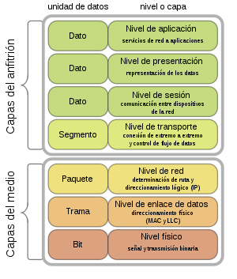

El modelo de interconexión de sistemas abiertos (OSI, por sus siglas en inglés) es un modelo conceptual, creado por la Organización Internacional de Normalización (ISO), que permite que diversos sistemas de comunicación se comuniquen usando protocolos estándar. En resumidas cuentas, el modelo OSI proporciona a los diferentes sistemas informáticos un estándar para comunicarse entre sí. El modelo OSI se puede entender como un lenguaje universal de comunicación entre sistemas de redes informáticas que consiste en dividir un sistema de comunicación en siete capas abstractas, apiladas en vertical.
